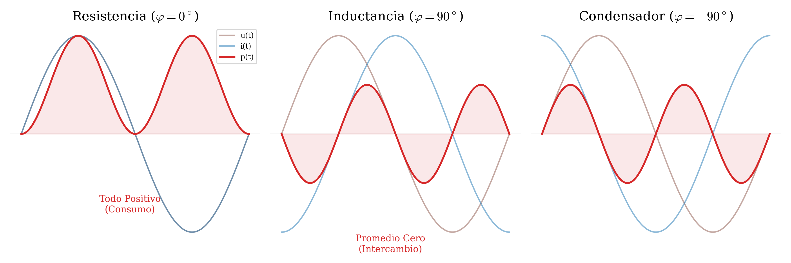
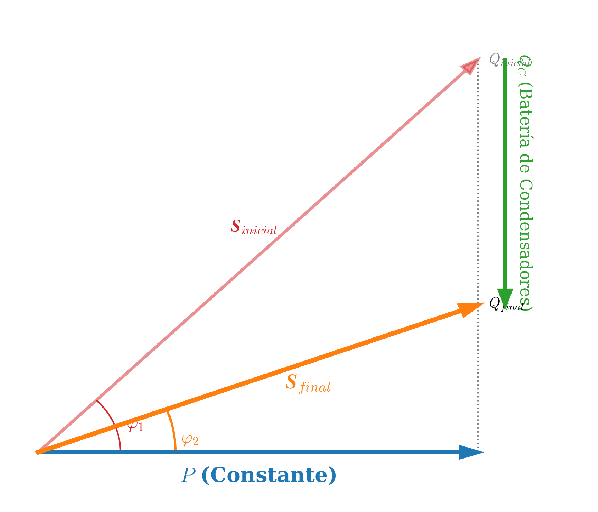
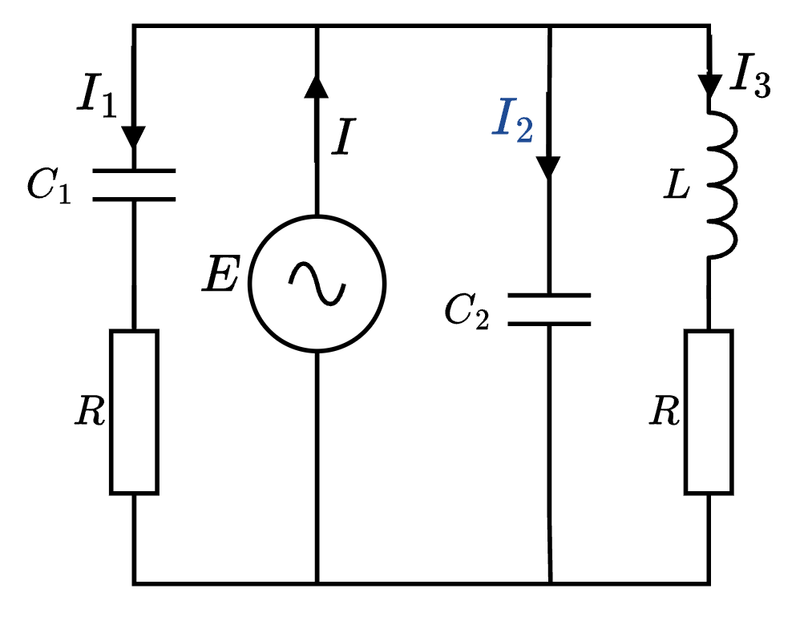
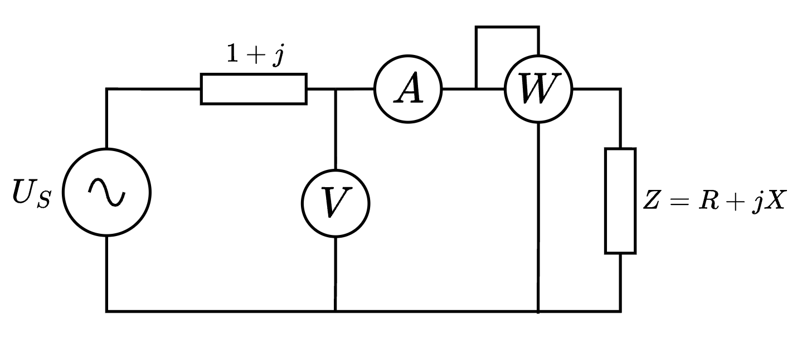

En corriente continua, la potencia era simple: \(P = V \cdot I\). Sin embargo, en corriente alterna, el desfase entre tensión e intensidad hace que aparezcan tres formas de entender la energía.
6.1 Conceptos Fundamentales
Cuando aplicamos una tensión alterna a una carga, la energía fluye. Dependiendo de si la carga almacena energía (bobinas/condensadores) o la consume (resistencias), definimos:
A. Potencia Activa (\(P\))
Es la potencia útil, la que realmente realiza un trabajo (calor, luz, movimiento). Se disipa en las resistencias.
- Símbolo: \(P\)
- Unidad: Vatio (W)
- Fórmula: \(P = U \cdot I \cdot \cos \varphi\)
B. Potencia Reactiva (\(Q\))
Es una potencia “de ida y vuelta”. No realiza trabajo útil; simplemente se dedica a crear y destruir campos magnéticos (bobinas) y eléctricos (condensadores). La fuente la entrega y el componente la devuelve 50 veces por segundo.
- Símbolo: \(Q\)
- Unidad: Voltamperio reactivo (var)
- Fórmula: \(Q = U \cdot I \cdot \sen \varphi\)
C. Potencia Aparente (\(S\))
Es la potencia total que debe suministrar la fuente (o la que dimensiona los cables y transformadores). Es la suma vectorial de las anteriores.
- Símbolo: \(S\) (o \(|\vec{S}|\))
- Unidad: Voltamperio (VA)
- Fórmula: \(S = U \cdot I = \sqrt{P^2 + Q^2}\)
6.2 Potencia en los Elementos Básicos
Analicemos qué ocurre en cada componente puro observando sus ondas de tensión (marrón) y potencia instantánea (rojo).

| Elemento | Desfase (\(\varphi\)) | Potencia Activa (\(P\)) | Potencia Reactiva (\(Q\)) | Comportamiento |
|---|---|---|---|---|
| Resistencia | \(0^\circ\) | \(U \cdot I\) | \(0\) | Consume energía constantemente. |
| Bobina | \(90^\circ\) | \(0\) | \(+ U \cdot I\) | Absorbe \(Q\) (positiva). No se calienta. |
| Condensador | \(-90^\circ\) | \(0\) | \(- U \cdot I\) | Cede \(Q\) (negativa). No se calienta. |
6.3 El Triángulo de Potencias
Al igual que teníamos un triángulo de impedancias, tenemos un Triángulo de Potencias. Relaciona las tres magnitudes mediante Pitágoras.
Relaciones Trigonométricas:
- Hipotenusa: Potencia Aparente (\(\vec{S}\)).
- Cateto Horizontal: Potencia Activa (\(P\)).
- Cateto Vertical: Potencia Reactiva (\(Q\)).
Matemáticamente, definimos la Potencia Compleja (\(\vec{S}\)) como:
\[ \vec{S} = P + \mathrm{j}Q \]

6.3.1 El Factor de Potencia (\(f.d.p.\))
Es un indicador de la eficiencia del sistema. Se define como el coseno del ángulo \(\varphi\):
\[ f.d.p. = \cos \varphi = \frac{P}{S} \]
- \(\cos \varphi = 1\): Toda la potencia es útil (\(S=P\)). Caso ideal (Resistivo puro).
- \(\cos \varphi < 1\): Parte de la energía se desperdicia circulando como reactiva.
En el mundo real, la inmensa mayoría de las instalaciones industriales tienen un carácter fuertemente inductivo. Esto significa que consumen mucha potencia reactiva positiva (\(Q > 0\)) y tienen un factor de potencia bajo (\(\cos \varphi < 0,8\)).
¿Por qué el consumo es Inductivo?
La razón son las Máquinas Eléctricas. Tanto los motores (bombas, ventiladores, cintas transportadoras) como los transformadores funcionan basados en campos magnéticos. Para crear estos campos magnéticos, necesitan absorber corriente reactiva de la red para magnetizar sus bobinas.
¿Por qué es necesario corregirlo?
Tener un factor de potencia bajo (\(\cos \varphi\) pequeño) implica tener un ángulo \(\varphi\) grande, lo que obliga a la empresa eléctrica a suministrar mucha Potencia Aparente (\(S\)) para conseguir la misma Potencia Activa (\(P\)).
\[ I = \frac{S}{U} = \frac{P}{U \cdot \cos \varphi} \]
Si el \(\cos \varphi\) es bajo, la Intensidad Total (\(I\)) se dispara para mantener la misma potencia útil (\(P\)). Esto provoca:
- Pérdidas de energía: Más corriente calienta más los cables (efecto Joule).
- Sobredimensionamiento: Se necesitan transformadores y cables más gruesos.
- Penalizaciones económicas: Las compañías eléctricas cobran un recargo muy alto en la factura si tu factor de potencia es bajo (normalmente si es menor de 0,95).
¿Cómo se corrige? (Compensación)
La solución consiste en instalar elementos que generen la potencia reactiva que los motores necesitan, para no tener que pedirla a la red eléctrica. El elemento ideal es el Condensador (Batería de Condensadores).
- Los motores absorben \(Q\) (Inductiva, hacia arriba).
- Los condensadores ceden \(Q\) (Capacitiva, hacia abajo).
Al conectarlos en paralelo, la \(Q_C\) del condensador cancela gran parte de la \(Q_L\) del motor.

Análisis del Gráfico:
Estado Inicial (Rojo): Tenemos una carga con mucho consumo de reactiva (\(Q_{inicial}\)) y un ángulo \(\varphi_1\) grande. La corriente necesaria (\(S_{inicial}\)) es muy alta.
Acción (Verde): Introducimos una batería de condensadores que aporta una \(Q_C\) en sentido contrario (hacia abajo).
Estado Final (Naranja): La reactiva neta baja a \(Q_{final}\).
- La Potencia Activa (\(P\)) se mantiene igual (la máquina trabaja igual).
- La Potencia Aparente (\(S_{final}\)) disminuye.
- La intensidad total que circula por la línea baja, ahorrando dinero y pérdidas.
6.4 Ejercicios Propuestos
1. Una estufa de resistencia pura \(R=50\ \Omega\) se conecta a \(230\ \text{V}\).
a) Calcula su potencia activa, reactiva y aparente.
b) ¿Cuánto vale su factor de potencia?
Soluciones: \(P=1058\ \text{W}\); \(Q=0\); \(S=1058\ \text{VA}\); \(\cos\varphi=1\).
2. Un condensador de \(C=100\ \mu\text{F}\) se conecta a \(230\ \text{V}\) / \(50\ \text{Hz}\).
a) Calcula la reactancia \(X_C\) y la potencia reactiva \(Q\).
b) ¿Absorbe o cede potencia reactiva?
Soluciones: \(X_C=31,83\ \Omega\); \(Q = -1661\ \text{var}\); Cede reactiva (Capacitivo).
3. Una instalación consume una potencia activa \(P=3000\ \text{W}\) y una reactiva inductiva \(Q=4000\ \text{var}\).
a) Calcula la potencia aparente total.
b) Halla el factor de potencia.
c) Si la tensión es \(230\ \text{V}\), ¿qué corriente circula por el cable general?
Soluciones: \(S=5000\ \text{VA}\); \(\cos\varphi=0,6\); \(I=21,74\ \text{A}\).
4.En el circuito de la figura, calcular:
a) La intensidad que circula por cada rama.
b) La impedancia equivalente vista desde el generador.
c) Las potencias activa y reactiva totales.
Datos: \(X_{C2}=10\ \Omega\); \(X_{C1} = X_L = R = 5\ \Omega\); \(E = 50\ \text{V}\).

Soluciones: a) \(\vec{I}_{\text{Rama1}} = 5 \sqrt{2} \phase 45^\circ\ \text{A}\); \(\quad \vec{I}_{\text{Rama2}} = 5 \phase 90^\circ\ \text{A}\);\(\vec{I}_{\text{Rama3}} = 5 \sqrt{2} \phase -45^\circ\ \text{A}\); b) \(\vec{Z}_{eq} = 4 + 2\mathrm{j}\ \Omega\) (\(2 \sqrt{5} \phase 26,56^\circ\ \Omega\)). c) \(P_T = 500\ \text{W}\); \(\quad Q_T = 250\ \text{var}\) (Inductiva).
5. En el circuito de la figura se muestra un circuito de corriente alterna en el que las indicaciones de los aparatos de medida, supuestos ideales, son las siguientes:
- Voltímetro, \(100\ \text{V}\) (valor eficaz).
- Amperímetro, \(20\ \text{A}\) (valor eficaz).
- Vatímetro, \(1200\ \text{W}\).
Hallar \(\vec{Z}\), \(R\), \(X\) y \(\vec{U}_s\), tomando \(\vec{I}\) como origen de fases.

Soluciones: Impedancia: \(\vec{Z} = 3 + \mathrm{j}4\ \Omega\) (\(5 \phase 53,13^\circ\ \Omega\)). Componentes: \(R = 3\ \Omega\); \(\quad X = 4\ \Omega\). Tensión fuente: \(\vec{U}_s = 80 + 100\mathrm{j}\ \text{V}\) (\(128 \phase 51,31^\circ\ \text{V}\)).
6. El circuito de la figura se alimenta con una fuente de tensión de valor eficaz \(220\text{V}/50\text{Hz}\). Se pide:
a) Calcular el valor de la lectura del amperímetro A.
b) Determinar la lectura del voltímetro V.
c) Calcular las potencias totales consumidas en el circuito y representar el triángulo de potencias.

Soluciones: a) Lectura A \(= 5 \sqrt{2}\ \text{A}\). b) Lectura V \(= 155,56\ \text{V}\). c) \(P = 1100\ \text{W}\); \(\quad Q = -1100\ \text{var}\); \(\quad S = 1555,63\ \text{VA}\).
7. En el circuito de la figura se sabe que los elementos R-L constituyen una carga que absorbe \(2000\ \text{W}\) con el factor de potencia 0,5 si se cortocircuita el condensador C. Si la tensión de la fuente es de \(220\ \text{V}/50\text{Hz}\), calcula el valor que debe tener el condensador para que el factor de potencia del conjunto R-L-C sea unitario.

Solución: \(C = 36,75\ \mu\text{F}\).
8. Se conecta a una línea de \(220\ \text{V}\) un receptor monofásico inductivo (motor eléctrico) que consume una potencia activa de \(5\ \text{kW}\) con un factor de potencia de \(0,7\). Se pide:
a) Calcular las potencias reactiva y aparente.
b) Calcular la capacidad equivalente del condensador que se ha de conectar si se desea mejorar el factor de potencia a \(0,95\).
c) Calcular la reducción de corriente por la línea al conectar el condensador.
d) ¿Ha cambiado la potencia activa al mejorar el factor de potencia? Justifica la respuesta.
Soluciones: a) \(S = 7142,8\ \text{VA}\); \(\quad Q = 5101\ \text{var}\). b) \(Q_C = 3457,5\ \text{var} \Rightarrow C = 227,4\ \mu\text{F}\). c) La corriente baja de \(32,47\ \text{A}\) a \(23,92\ \text{A}\). Reducción: \(\Delta I = 8,55\ \text{A}\). d) No. La potencia activa (\(P\)) depende del trabajo que realiza el motor, y eso no cambia al añadir condensadores en paralelo.
9. Una carga de corriente alterna monofásica de \(50\ \text{Hz}\) es alimentada a una tensión de \(220\ \text{V}\) (valor eficaz). Sabiendo que la potencia aparente absorbida por dicha carga es de \(20\ \text{kVA}\), con \(\cos \varphi = 0,8\) inductivo, se pide:
a) Las potencias activa y reactiva consumidas por la carga.
b) La impedancia compleja de la carga.
c) El condensador que conectado en paralelo con la carga hace que el factor de potencia de la instalación sea \(0,95\) inductivo.
Soluciones: a) \(P = 16\ \text{kW}\); \(\quad Q = 12\ \text{kvar}\). b) \(\vec{Z} = 1,936 + \mathrm{j}1,452\ \Omega\) (\(2,42 \angle 36,87^\circ\ \Omega\)). c) \(Q_C = 6740,8\ \text{var} \Rightarrow C = 443,3\ \mu\text{F}\).